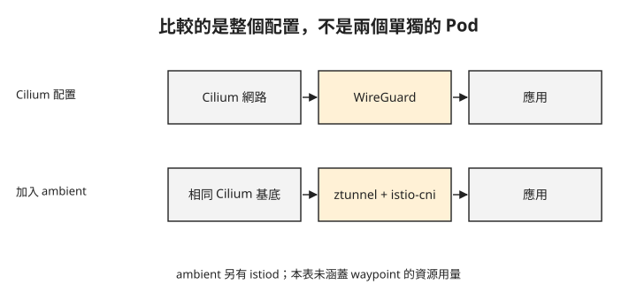

Day 4：依需求比較 Istio 與 Cilium，先看證據涵蓋什麼¶
團隊準備決定服務通訊方案，有人拿出兩組數字：「ztunnel 只用 2Mi，Cilium agent 卻用 200Mi；但 Cilium 請求又比較快，該選哪個？」問題在於兩個元件負責的工作不同，量測也沒有包含所有功能。這章會從需求回看已完成的測試，判斷候選方案與下一個必須補的驗證。
先列出每個實驗真正回答的問題¶
Day 1 驗證外部入口，包含 hostname 路由與用戶端到 Envoy 的 HTTP/3。Day 2 與 Day 3 則測試內部通訊，但它們的 HTTP 測試並不相同：Istio 測連線池限制，Cilium 測方法與路徑授權。
比較前，先把成功結果與未完成項目放回各自的需求：
| 需求 | Istio ambient 的證據 | Cilium 的證據 |
|---|---|---|
| 保護服務通訊 | ztunnel 紀錄呈現 HBONE 通道與兩端 SPIFFE 身分 | 跨節點 WireGuard 擷取中未見選定 Pod 流量的明文 |
| 工作負載相互身分驗證 | client/default ServiceAccount 身分出現在連線紀錄 | SPIRE 未就緒，未完成驗證 |
| HTTP 方法與路徑授權 | 本課未測試這組正反例 | GET / 成功，GET /admin 與 POST / 被拒絕 |
| HTTP 連線池限制 | waypoint 搭配 DestinationRule，出現 overload 訊號 | 本課未測試對等設定 |
表中的「未測試」不代表產品沒有能力。「SPIRE 未就緒」也只描述這組環境，不能直接變成所有部署的產品結論。你能據此安排下一個測試，但不能把空白欄當成正式能力排名。
比資源之前，先確定哪些元件會一起存在¶
Cilium 在本課同時提供 Pod 網路。採用 Istio ambient 時，Cilium 仍然存在，再額外加入 Istio 元件。因此 增量成本指在既有環境上新增的用量，不能拿新增元件與整套網路直接互相比較。
下圖把兩種測量配置並排。下排保留上排的 Cilium，再加入 ambient；HTTP waypoint 未列在這次資源數據中。

圖中的差別提醒你：ztunnel 的用量只是新增元件之一。若需求包含 Day 2 的 HTTP 連線池限制，還得計入 waypoint，不能用 2Mi 當成完整 mesh 的預算。
以下數據來自兩節點、低負載環境的 kubectl top 觀測。DaemonSet（表內標 DS）在每個節點各有一份，因此各 DS 都有 2 個 Pod；控制平面的 cilium-operator 有 2 個 Pod，istiod 有 1 個。表中 CPU 與記憶體是每個 Pod 的觀測範圍，並非整個叢集加總。
| 配置 | 元件 | Pod 數量 | CPU／Pod | 記憶體／Pod |
|---|---|---|---|---|
| Cilium | cilium agent DS | 2 | 41–280m | 約 200Mi |
| Cilium | cilium-envoy DS | 2 | 3m | 13Mi，L7 閒置 |
| Cilium | cilium-operator | 2 | 1–8m | 27–45Mi |
| 新增 ambient | ztunnel DS | 2 | 3–4m | 2Mi |
| 新增 ambient | istio-cni DS | 2 | 2–3m | 17Mi |
| 新增 ambient | istiod | 1 | 21m | 41Mi |
依表中數值換算，兩節點的 ambient 新增記憶體約為 2 ×（2 + 17）+ 41 ＝ 79Mi：兩份 ztunnel 與 istio-cni，再加上一份 istiod。這個加總未含 waypoint；若需要 HTTP 處理，還要另外計入其用量。
Cilium agent 的用量包含網路管理工作，不能全算成 mesh 的額外成本；同樣地，ztunnel 的 2Mi 不能代表 ambient 所有元件。正式容量規劃還需要實際負載下的變化與高峰，這份單次觀測只能提供起始參考。
從維護角度看，採用 ambient 也增加了 istio-cni、ztunnel 兩個 DaemonSet，以及控制平面 istiod。團隊需要管理共存設定、升級與故障檢查，這些工作不會出現在記憶體表裡。
延遲差 0.8ms，能支持多大的結論？¶
兩組延遲測試使用相同的跨節點 client→web 拓樸，各發出 60 次請求。測量值是 curl 的 time_total，包含該請求從開始到完成的用戶端經過時間，不是單一代理函式的執行時間。
p50 是一半樣本不超過的值，p95 則是一組樣本中約 95% 不超過的值。以下所有欄位單位都是毫秒：
| 配置 | 平均 | p50 | p95 |
|---|---|---|---|
| Cilium L4 路徑，加上 WireGuard | 2.76 | 2.62 | 4.37 |
| 相同 Cilium 基底，再加入 Istio HBONE | 3.54 | 3.12 | 5.59 |
這兩批樣本的平均差為 0.78ms，約 0.8ms。它描述的是這次兩種配置的觀測差異；Istio 組仍包含底層 WireGuard，並非兩種互斥加密方案的比較。
這裡沒有多批重複測試、誤差估計或高並行測試，因此不能將 0.8ms 當成固定成本，也不能僅憑它證明差異完全來自使用者空間代理。更不能以這組 L4 路徑數字，宣稱加入 waypoint 後仍有相同結果。
把候選方案放回三種需求¶
已經使用 Cilium，只需要跨節點加密與 HTTP 存取規則¶
Day 3 已提供 WireGuard 與方法／路徑政策的正反例。可以先評估這條配置，並在自己的工作負載重做測試。若需求沒有服務身分驗證，就不要把尚未完成的 SPIRE 測試當成這個需求的必要條件；但若日後新增身分要求，必須重新評估。
需要工作負載身分，還需要 HTTP 連線池限制¶
Day 2 的 Istio ambient 已涵蓋這兩類功能，可作為優先驗證的候選配置。下一步要補上所需的授權政策、正式負載與 waypoint 成本。Cilium 仍提供底層網路，因此要一併維護兩套元件的相容設定。
已有 sidecar，正在考慮遷移¶
Istio sidecar 模式會在每個應用 Pod 內配置一個 Envoy 代理，由代理處理該 Pod 的服務通訊。ambient 則由每個節點的 ztunnel 處理 L4 通訊與 mTLS，需要 HTTP 處理時再加入獨立部署的 waypoint。遷移時，原本由 Pod 內代理承擔的功能，會改由這些元件分工。
本課沒有量測 sidecar 的資源與延遲，也沒有完整列出遷移功能差異。不能用上面的表直接決定移除 sidecar。應先盤點目前使用的功能，再依目標版本確認 ambient 是否涵蓋，最後做小範圍遷移驗證。
這三種情境的差別在必要能力與待補證據。先找出不能缺少的功能，再比較完整配置的成本，比從單一數字推導全面選型可靠。
想一想¶
- 你的服務要用 waypoint 執行 HTTP 政策，能否用「每節點增加 2Mi」估算總成本？還少了哪些元件？
- 同事說「Cilium 不支援 HTTP 連線池限制，因為 Day 3 沒有測成功」，這個結論超出了哪一項證據？
- 應用有嚴格延遲要求，這 60 次低負載樣本足以決定上線嗎？你會補哪種測試？
小結¶
入口、傳輸加密、工作負載身分與 HTTP 政策各有不同的驗證方式。選型時先確認功能是否滿足，再比較同一需求下的完整部署成本；單次資源與延遲數據無法代替容量或可靠性測試。到這裡，流量傳送過程已有保護，但應用執行時仍會處理明文。Day 5 將把問題移到執行環境：當宿主機管理者不在信任範圍內，還需要什麼保護？
延伸閱讀¶
想再深入，可以從這幾份開始：
- Istio ambient：目標版本的功能與部署方式。
- Cilium Service Mesh：加密、身分與 HTTP 處理的功能範圍。
Istio 與 Cilium 標誌為 CNCF（Linux Foundation）官方資產，此處作社群教學用途。數據來自本課程實測。